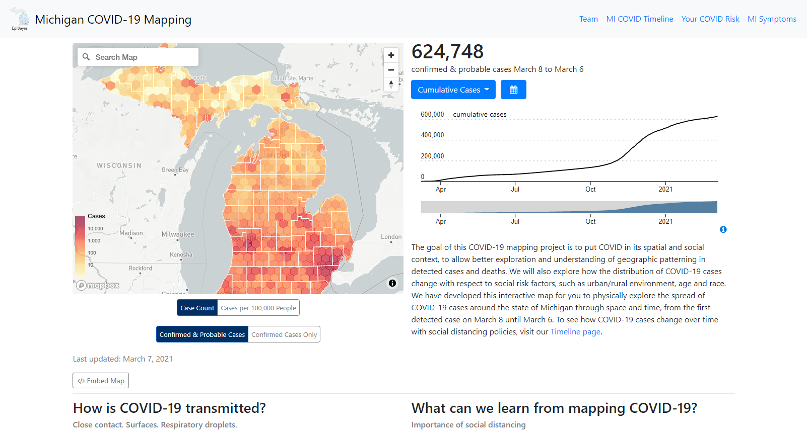

covidmapping.org
summer 2020/ present - ui/ux design, front end development, project management
covidmapping website
link to project
As a member of the Epibayes Lab, I was in charge of updating, curating, and developing for our COVID-19 dashboard. In addition to working on covidmapping.org, I also revamped and maintained our Lab website and collaborate with other Epidemilogy groups at the University of Michigan to create and maintain their respective dashboards.
accomplishments
- Updated and streamlined design for COVID-19 Mapping dashboard, increasing readability and engagement with map data visualizations. Embeddable map view was featured in local news article. Updated web design sees a 10% increase in page views
- Created 2 new learning modules with data team including one module that used Mapbox Studio’s story scroll feature and another module with a map data visualization that utilized a different set of data about COVID-19. Both modules increase overall site engagement
- Ran data pipelines with Conda Snakemake and created new Python scripts to semi-automate Github Gist-based data updates for website
- Actively developing different features including a focus-context-based Michigan COVID-19 timeline view, static map views, and more